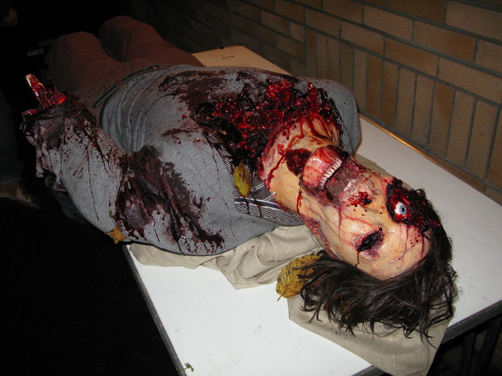

The human mind can become a chaotic thing, a mess of thoughts that, were they put into a more physical form, they would resemble a Lovecraftian horror. Maybe that’s why the people around always seemed quite empty, for they knew what they could become and because of it avoided thought entirely, seeming automated as they moved through the police headquarters, and even though there was a serial killer, the automation went on, always efficient yet empty. He could understand how those men thought, as well as why they did it, yet he didn’t want to be like them, he wanted to be something more, someone who had conquered the chaos of the unadulterated human mind and transformed their knowledge of it into a tool. The detective sat, as he usually did, in his chair in the headquarters, pouring through the evidence at the scene of the crimes, their locations, anything to make sure that he caught the killer. He knew he had to act fast, constantly reminded as his two children checked up on him, now at his desk looking through the notes he had compiled on the situation.
“Odd,” the older of the two children said, trying to help his father, “it seems like most of the murders are in our vicinity.” The son had just recently graduated from police training and become a full-fledged officer of the law, and someone who the father relied on for both mental and crime solving help.
"Yeah, I found that already, it’s why I’m in such a rush,” said the father, though regretting his choice of words upon realizing that it meant he wouldn’t rush for normal killings. The younger child, only ten years old, went into her father’s room, and asked to play with him, though he ended up refusing because of how much work he had to do, however instead of leaving she climbed up the chair and looked down at his work, the expression on her face implying that she was trying to help.
It took him a few sleepless nights to find some clues to the serial killers hideout, or at least where he seemed to be staying for the moment as his past murders pointed to him moving around and between communities. With some help from his older child and a bit of creativity and cheering up from his younger child, he was finally able to produce a definite place to investigate, though he still had to get the warrant. The detective drove to the station, sometimes almost falling asleep, however he was always awoken by the voices of his children from the edge of his hearing, however they were not in the car. Upon arriving at the station, he presented his evidence and was given the warrant quite quickly, as he deduced that they would take any chance to find something about the perpetrator of this crime. The chief told the detective to get some sleep, however the detective decided that going there as soon as possible was the best option, as the killer moved quickly and quietly, and he might no longer be at the place by morning. The detective went home to gather some notes and other tools quickly, and also got his older child to be his partner with him in this investigation. The police chief only wanted a few people going in as to not scare the residents nearby, and possibly in the residence as well if the detective was incorrect, however he was also given a walkie talkie to be able to contact the station quickly.
Upon arriving at the house, they knocked lightly, asking the residents to let them in, and when they got no response, they mentioned that they were police, and that they had a warrant, but wanted this to be quick. After waiting a few minutes, the door opened, however there was no one at the door, though upon entering some discarded string and hooks were immediately noticeable, and therefore how the person opened the door. The detective and the child split up to check between the upstairs and downstairs of this seemingly modest two story house, and they fine tuned their walkie talkies to pick up each other talking, allowing them to do this covertly and without having to constantly regroup. It was around thirty minutes in of searching throughout the many cabinets, shelfs, and rooms that littered the house that something happened, and that the detective realised something was off. The first thing the detective heard was sounds of struggling, and large stomps and footsteps, however he decided not to check it out as he had also had trouble with moving somethings around to check, and thought that there might have been something even heavier to move upstairs. However it was in another ten minutes that he went to check upstairs, as he had, when looking at the house, noted that the upstairs was smaller than the downstairs, and the detective had already searched through everything meaning there was something happening upstairs. Upon going upstairs, the detective searched through the many rooms, some with open doors and others with more closed doors, though all slightly ajar, however if something had happened why had he not been notified through the walkie talkie, as though the two did talk there were some gaps like that previously, but it was truly odd to him, especially because the child’s investigation should have been finished.
The detective entered the room at the end of the hallway, the last one he had to check, and as he walked in the steps creaked. With each step in towards the currently dark room, the detective got more anguished, his heart beating faster and faster with each move forward. His free hand on the wall, the detective found the light switch and turned it on, and the lights shone upon it. The horribly mutilated body. The walls, painted around it in a bloody red were glowing with the new light that filled the room, their sheen, which stained the wall, bringing him such discomfort that he felt bile come up, even though he had seen this such mutilation many times before. However, this was only his initial look, as he looked again and saw the style the killer was known for upon the body, and though he had seen it before, seeing the body truly fresh was utterly horrifying, in a way that no picture or old thing could represent, that he stopped thinking for a moment, and immediately all the thoughts came in, those terrible, terrible things he wanted to do to the killer, and the terrible anguish he felt at losing the child. He looked upon the child’s body, as the paws of dogs were stabbed onto his closed eyelids with knives, a giant blade stuck in the top of his head, which seem to be what killed him, and the duct tape covering his mouth seemed to be why there was little commotion other than what he assumed to be that struggling he heard earlier. The most awful thing to look at though was the tentacles stabbed throughout his body, using the nails of his previous victims, all of which had been removed, as they were with him. Upon closer inspection, however, the detective also noticed a note through the tears welling up in his eyes, and it said, a nice reunion between your wife and son, huh. This was made him look again, and what he say were certain nails, the nails chewed on like what his wife had started doing before her murder, and, before breaking down, he managed to tell the police chief through the walkie talkie to bring the team to the house.
When the police chief found him, he was broken down to tears, a broken man who had glimpsed at horror he had never seen before, and seeing things because of his loss of sleep. From the detective’s point of view, there were no police, only the sounds of sirens and the voices of his son and his wife, his wife chastising him for his breaking down, his son telling him from behind that he wasn’t supposed to be like this, and that he has to catch the murder for him. The detective needed to stand up, but first he wanted to turn around, to see from where the voices came, and what he saw were shadows, however these shadows silhouettes that which seemed not human, instead great monsters of writhing mass that seemed to wiggle, these aberrations of his own thoughts that urged him forward with their words however the sight of them made him want to turn back and leave it all behind, and protect the child that he still had.
Eventually, he fell asleep, and when he woke up, he was in the police office infirmary, in a stark white bed, though with slight stains of previous patients. He immediately wanted to go home to his child and be in her comfort, and there he went, however all he would find would be the familiar red sheen, and the body of his child, stabbed through with the body parts of animals and the nails of her brother. She sat in the chair at his desk, the one where he always was, and her body was far more mutilated than the killer’s normal bodies, yet while her body was nearly invisible under the great many things pinned upon it, the face had nothing on it, no cuts or marks, however it was left in an expression of such great horror that it almost seemed mocking in its intention. This mockery of his family, of what he had spent his life doing, caused him to return to his broken state once more, however now he was in his home, a place where he thought he was safe, but instead he was alone, and left an empty shell. He had been awake for hours on end, yet to move, crying over and over and any attempt at thought or movement would invoke him to break down again. Slowly, he broke. His body weakened. He was locked in the home by his own mind. He began to see the visions. His wife urged him to get up. His son urged him to justice. Then his daughter appeared. A new addition to his hallucinations. She only spoke a few words. “Just rest.” He turned around, and what he saw was astounding. His wife and son were aberrations, pushing their ideals on him, however his daughter was human, a shadow of what he wanted, of what he needed, and he was truly enamored by it, by fulling himself, that when the shadow offered its hand, he took it. It pushed him forward from behind him, and he began to walk, as he felt free from his grief. He never looked back, never saw his wife and son becoming more human and his daughter becoming more and more monstrous, an aberration forming slowly, as its tentacles extended through his mind. He went up and up and then forward, his body tensed for the freedom and the rest he knew he would receive if he just followed where his daughter pushed him. So fell the man, in both mind and body, off the roof of the house and down to the street, dying a broken, crying wreck who was no longer of his own mind but instead wished to be free of the expectations around him, and of what had inevitable been in his mind his own fault, his own creation.